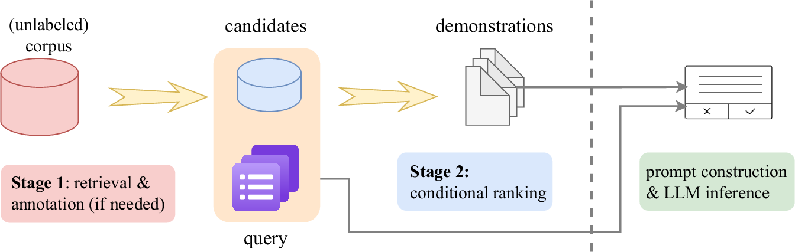
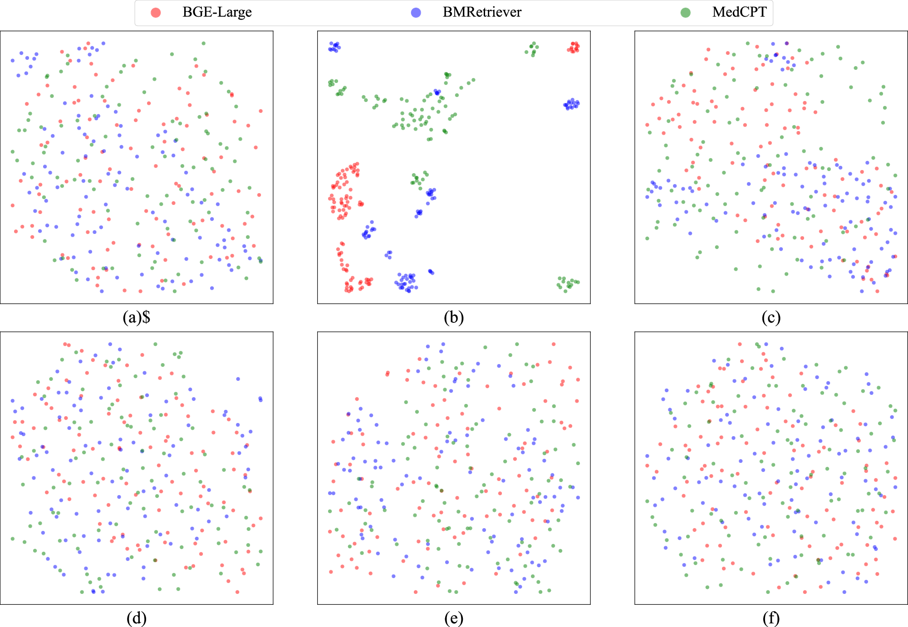
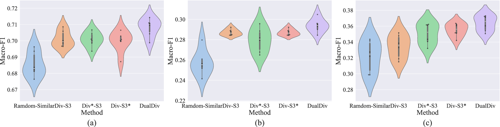
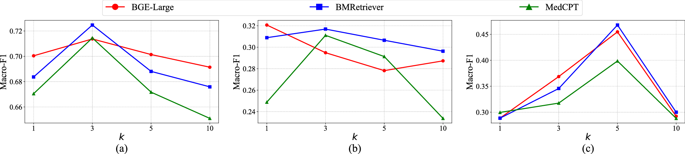
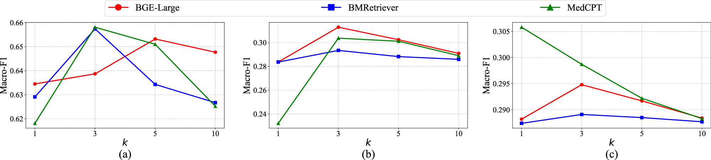
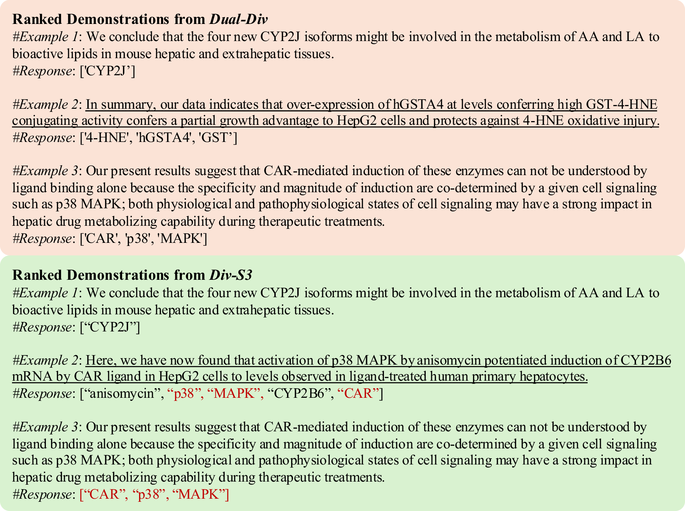

全文精读
数据高效的生物医学上下文学习：多样性增强的次模优化视角
Data-efficient biomedical in-context learning: a diversity-enhanced submodular perspective
解读更新 2026-11-15 22:56 · 依据论文全文整理
全文精读已完成，文章版正在逐步升级。现有内容可继续阅读。
Dual-Div研究如何在有限标注与提示预算下选择有效的生物医学示例，以两阶段检索和排序兼顾语义覆盖与多样性。作者在实体识别、关系抽取和文本分类上比较两种大模型与三种检索器，发现早期候选多样性尤其重要，示例数量通常以3—5个较优。解读：该工作适合借鉴案例选择方法，但理论保证及复现仍需审慎核查，原文存在统计报告和公式缺项。
研究问题
生物医学文本标注昂贵且类别不均衡，仅按语义相似度选示例容易重复覆盖常见模式。作者关注有限预算下如何同时保留代表性与内部差异，并避免总体准确率掩盖少数类表现；DDI仅979/5,761条测试查询含目标关系，体现了评价难点。
方法与路线
方法先用检索器生成向量，以设施选址函数衡量覆盖、以归一化相似度矩阵的对数行列式衡量多样性，再通过加权目标和lazy greedy选候选。第二阶段依据查询的条件增益进行模块化排序；必要时只标注候选，LLM仅负责最终推理。
创新与比较
作者将多样性显式纳入检索与条件排序两个阶段，并通过阶段消融区分作用来源。解读：贡献重点是示例选择流程及目标组合，而非提出新的DPP或次模理论；去除向量范数影响的设计还尝试减轻词频对选择的干扰，其效果不能外推为消除全部语义偏差。
证据与发现
BGE-Large下，Dual-Div在两种LLM、三项任务上的macro-F1均为表内最高，但准确率并非全面领先。作者报告18项macro-F1比较全部优于Div-S3，其中11项显著；通常3—5个示例较优，但DDI排列稳定性存在例外，不能概括为所有配置均更鲁棒。
局限与边界
原文缺项：表1缺均值差、精确p值，且一项区间与星号冲突，限制统计复核；式(5)及式(7)后文字缺det，影响概率与多样性表达；式(12)缺求和范围界定，影响复现。解读：λ存在性论证仍需核查，相关理论保证未获独立验证，补充算法亦未提供。 原文核对： 表1图像确认：标题称Diff行报告“mean difference with 95% CI and paired t-test p-value”，但实际仅列置信区间和部分显著性星号，没有单独列出均值差及精确p值。不能由此补写缺失统计量；影响对提升幅度和统计显著性的完整复核，不影响读取已有性能数值。； 表1中Llama 3.1的DDI准确率差异区间为[−0.0019, 0.0208]，原页同时标有*，表注定义为p<0.05。该95%置信区间包含0，与同一双侧配对t检验下的显著性标记存在不一致；本批无法确定区间或星号何者有误，影响该项显著性判断。； 式(5)原页实际显示P(S)=(L_S)/(L+I)，分子、分母均缺少det或其他行列式记号；紧接正文却用Σ_{S⊆V}det(L_S)=det(L+I)解释归一化。缺项影响DPP概率公式的直接使用；不补写原式，页面其余内容可读。； 式(7)之后的解释文字将多样性因子写成log(W_S)，缺少det，与式(7)、式(8)清楚显示的log det(W_S)不一致。影响该处文字表达的数学含义，不能将矩阵对数与对数行列式混同；完整定义以原页式(8)为依据。； 式(12)原页第二行写作Σ_{x_i∈T}f({x_i}∪Q)−f(Q)，未用括号将−f(Q)纳入每个求和项，也未写出相应的|T|因子。按当前排版，其与第一行Σ_{x_i∈T}f({x_i}|Q)及式(11)并不一般等价。缺少求和范围界定影响排序目标的准确复现，尤其原约束为|T|≤k；不替作者补写公式。
方向关联
解读：其覆盖与非冗余联合选择思路，可对应智能运维中有限预算的故障案例检索，macro-F1也提示关注稀有故障。结构设计与可靠性研究可借鉴预算建模，但论文没有工程系统实验，也未验证故障风险、失效概率或设计安全性，关联属于方法迁移而非直接成果。
后续研究建议
建议先核实原文公式与统计冲突，并取得补充算法，再复现两阶段消融。面向运维迁移时，应比较仅相似度、仅覆盖及联合目标，在同等标注与提示预算下评价少数故障召回、macro-F1和检索成本；同时检验λ、示例顺序及候选规模的影响，避免直接照搬经验预算。
阅读建议
建议作为预算约束示例检索的方法参考重点阅读，尤其关注两阶段消融与少数类评价；不宜直接作为智能运维或可靠性应用已经有效的证据。
原图未改动。以下图注来自标注的来源，不据此补写摘要未报告的实验结论。
已取得的论文原图




原文图注与出处
Semantic embedding vectors from various retriever models on a ChemProt w/o \({\mathcal{D}}(S)\) , b DDI w/o \({\mathcal{D}}(S)\) , c HealthAdvice w/o \({\mathcal{D}}(S)\) , d ChemProt w/ \({\mathcal{D}}(S)\) , e DDI w/ \({\mathcal{D}}(S)\) , and f HealthAdvice w/ \({\mathcal{D}}(S)\) during optimization are reduced and projected by UMAP.
Wang, Jun et al.
原文图页 · CC BY 4.0



原文图注与出处
( a ) Macro-F1 performance on the ChemProt dataset under different values of K . ( b ) Macro-F1 performance on the DDI dataset under different values of K . ( c ) Macro-F1 performance on the HealthAdvice dataset under different values of K . Symbols: red circles = BGE-Large; blue squares = BMRetriever; green triangles = MedCPT.
Wang, Jun et al.
原文图页 · CC BY 4.0已取得的论文原图


原文图注与出处
( a ) Macro-F1 performance on the ChemProt dataset under different values of K . ( b ) Macro-F1 performance on the DDI dataset under different values of K . ( c ) Macro-F1 performance on the HealthAdvice dataset under different values of K . Symbols: red circles = BGE-Large; blue squares = BMRetriever; green triangles = MedCPT.
Wang, Jun et al.
原文图页 · CC BY 4.0

查看公开摘要
Recent progress in large language models (LLMs) has leveraged their in-context learning (ICL) abilities to enable quick adaptation to unseen biomedical NLP tasks. By incorporating only a few input-output examples into prompts, LLMs can rapidly perform these new tasks. While the impact of these demonstrations on LLM performance has been extensively studied, most existing approaches prioritize representativeness over diversity when selecting examples from large corpora. To address this gap, we propose Dual-Div , a diversity-enhanced data-efficient framework for demonstration selection in biomedical ICL. Dual-Div employs a two-stage retrieval and ranking process: First, it identifies a limited set of candidate examples from a corpus by optimizing both representativeness and diversity (with optional annotation for unlabeled data). Second, it ranks these candidates against test queries to select the most relevant and non-redundant demonstrations. Evaluated on three biomedical NLP tasks (named entity recognition (NER), relation extraction (RE), and text classification (TC)) using LLaMA 3.1 and Qwen 2.5 for inference, along with three retrievers (BGE-Large, BMRetriever, MedCPT), Dual-Div consistently outperforms baselines-achieving up to 5% higher macro-F1 scores—while demonstrating robustness to prompt permutations and class imbalance. Our findings establish that diversity in initial retrieval is more critical than ranking-stage optimization, and limiting demonstrations to 3-5 examples maximizes performance efficiency.